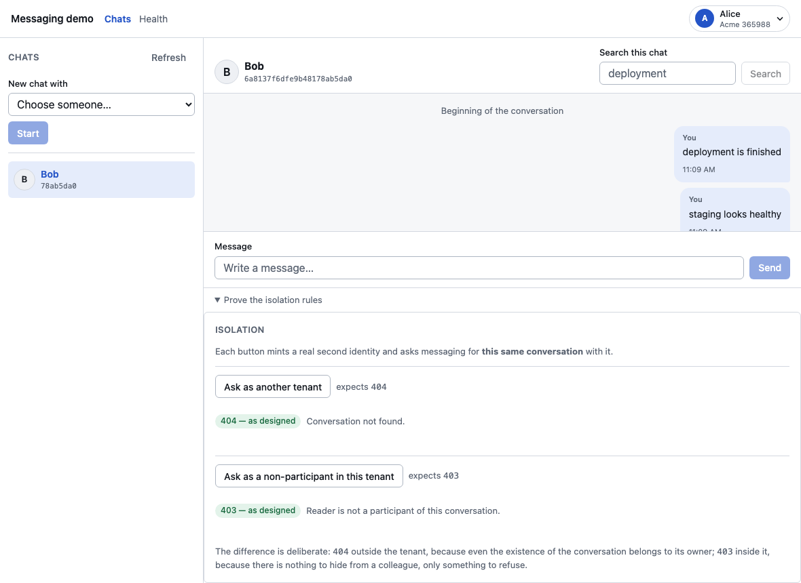

The two callers messaging must turn away, and why each gets a different answer. This page is the reason a real authorisation hole was found and fixed.

Refused twice, for two different reasonsEach button mints a real second identity and asks for this same conversation. Another tenant gets 404 — even its existence belongs to its owner. A colleague in the tenant who is not a participant gets 403. This panel found a real hole: both read paths checked the tenant and stopped there, so any token for a tenant could read any conversation in it by id. Fixed, and held by three tests.